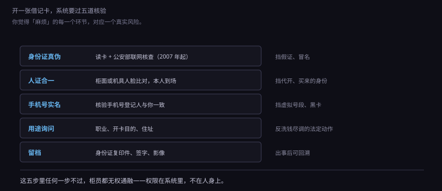
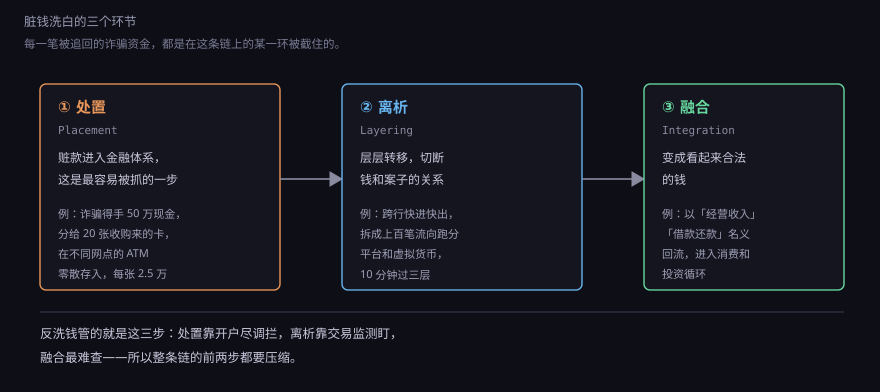
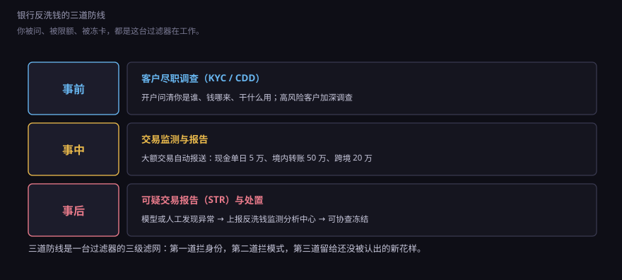
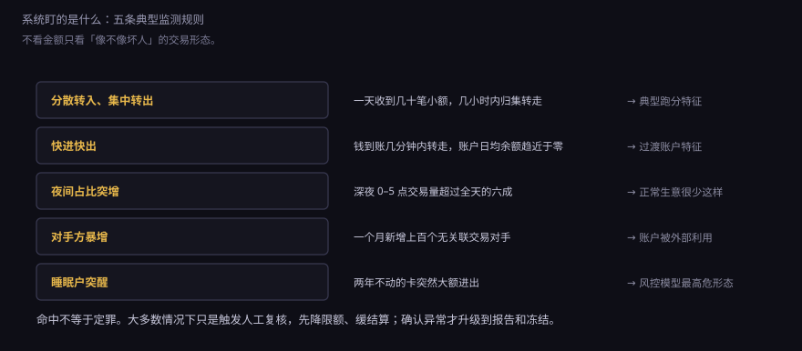
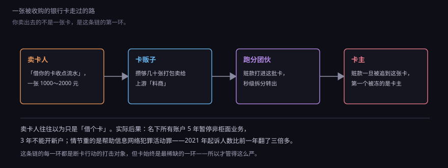
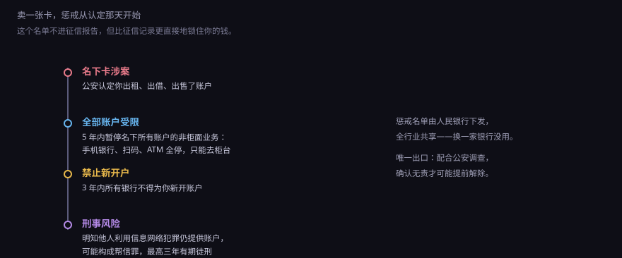

约 0.7 万字 · 6 张图 · 柜员问你的每一句话都不是闲聊， 它们对应一条法条、一个阈值、一次系统判断
你带着身份证去开一张新卡，因为换工作，公司要求指定银行的卡。 取号、坐下，柜员接过身份证，然后开始问：
最后还有一句你要念出来的话，大意是「本人已知晓出租、出借、出售账户的法律责任」。 念完，签字，拍照，卡才出来。
这套流程让人烦，但它不是柜员自己加的戏。 每一句话都对应一条制度要求，而且柜员必须在系统里把答案录进去， 录不进去，开户这一步就提交不了。有些银行把这些做成屏幕上的必填项， 空着就红框警告，柜员想跳都跳不过去。
为什么？因为一旦这张卡出了事，监管回头查的第一件事就是： 开户那天，你们问过没有、记录在不在。 记录在，责任在客户；记录不在，责任在银行。
这套问话在业内有个缩写：KYC，Know Your Customer，了解你的客户。 完整说法叫「客户尽职调查」，英文 CDD，Customer Due Diligence。
它要确认三件事，缺一不可：
| 要确认的 | 具体问什么 | 防的是什么 |
|---|---|---|
| 你是谁 | 姓名、证件号、证件真伪、人证是否一致 | 假身份、冒名开户 |
| 你住在哪 | 常住地址、联系电话、职业 | 出事找不到人 |
| 你拿这个户做什么 | 开户用途、预期交易规模、资金来源 | 把户当洗钱管道 |
这三件事的法律依据在《反洗钱法》里。2007 年 1 月 1 日第一部施行， 2025 年 1 月 1 日新版施行，把「客户尽职调查」这个词正式写进了法条， 并且明确了勤勉尽责的边界：银行做了该做的调查、留了该留的记录， 客户仍然违法，银行不担责；没做，就要罚。
罚得多重？不是警告了事。《反洗钱法》规定的罚款上限， 按情节可以到五百万，还可以对直接负责的高管个人罚款、 暂停业务、责令停业整顿。一家分行一年被罚几百万的案例， 在监管公布的处罚名单里每年都有几十起。
所以柜员问你的那些话，本质上是在替银行留证据： 证明它问过、你答过、答的和实际情况差得不太远。
问话之前，还有一步更快、更硬的动作：读身份证，联网核查。
2007 年 6 月，人民银行和公安部建成了「公民身份信息联网核查系统」。 银行插卡读芯片，把姓名和证件号发过去，公安部那边回一个结果： 一致、不一致、或者查无此人。整个往返几百毫秒。 这套系统上线之前，假身份证开户是普遍现象——九十年代到二〇〇〇年代初， 用一张假证在几家银行开出几十个户，几乎不需要技术。

需要说清的是：联网核查只解决「这张证是不是真的、是不是这个人」， 它不解决「这个人是不是被胁迫、被借用的」。 所以后面还有一道人脸比对，再后面才是柜员那些问话。
人脸比对也不是万能的。2021 年前后出过几起批量冒名开户的案件， 手法是拿到别人的身份证和一段人脸视频，在自助机具上过验证。 这就是为什么现在很多银行在自助机上加了「活体检测」—— 让你转头、眨眼、张嘴，本质是在确认镜头前是一个活人，而不是一段录像。
问完、核完，系统会给你打一个风险等级。这个等级你看不到，但它决定了你以后被管得多严。
| 等级 | 典型情形 | 银行会怎么做 |
|---|---|---|
| 低风险 | 本地户籍、有稳定单位、开卡用途明确 | 常规尽调，之后基本不打扰 |
| 中风险 | 异地开户、职业不固定、用途说不清 | 多问几句，限额可能压低，交易会被多看两眼 |
| 高风险 | 列入名单人员、涉诈涉赌线索、现金密集型行业 | 加强尽调，要求提供证明材料，限制非柜面业务 |
注意最后一行那个「现金密集型行业」——它不是歧视，是统计结果。 某些行业现金流大、票据少、上下游难以核验，天然适合把黑钱混进去。 银行不会因此拒绝给你开户，但会要求你说明业务模式、提供合同或流水。
这个等级不是终身制。你换了城市、换了工作、账户开始出现大额跨境收付， 系统都会重新评估。很多人不知道的是，自己被降过级—— 表现就是某天开始，手机银行的单笔限额突然从五万变成了五千。
现在说清楚：这么严，到底在防什么。
洗钱这件事，教科书上拆成三步：处置、离析、融合。 别被术语唬住，它描述的就是「脏钱怎么变成看起来干净的钱」。

举个具体的：一起电信诈骗骗到 50 万，钱在受害人账上，随时可能被冻结。 骗子要做的第一件事不是花，是让这笔钱离开原来的路径。 50 万拆成 20 笔打进 20 张收购来的卡，每张 2.5 万—— 这一步叫处置。然后在几分钟内，这 20 张卡各自再转出到另外几十张卡， 有的买虚拟货币，有的通过跑分平台「代付」出去，转三四层—— 这一步叫离析。最后这些钱以「货款」「还款」「投资收益」的名义， 回到某个正常经营的账户里，用来买房、开店、消费——这一步叫融合。
到融合这一步，钱在法律上已经很难追了，因为它和正常资金混在一起， 每一笔都有看似合理的解释。所以反洗钱的重点从来不是抓最后一步， 而是在前两步把它拦住：处置靠开户尽调，离析靠交易监测。
对应的，银行内部也分三层来防。

第一道是事前：开户时的尽职调查。这一层的作用是让「用假身份开个户」 这件事变贵——要么你提供真实身份（可追），要么你根本开不出户。
第二道是事中：交易监测。这里有一组硬性的数字， 是原银监会/人民银行规定的大额交易报告标准， 达到就自动上报，不需要任何人判断「可疑不可疑」：
| 情形 | 阈值（当日单笔或累计） |
|---|---|
| 现金存取 | 人民币 5 万元以上 |
| 自然人账户境内转账 | 人民币 50 万元以上 |
| 自然人账户跨境转账 | 人民币 20 万元以上 |
| 非自然人（企业）账户转账 | 人民币 200 万元以上 |
注意「当日累计」这四个字。分十次每次取 4.9 万，加起来 49 万， 一样触发——系统是按日汇总的，拆单没有用。 这套阈值从 2017 年 7 月 1 日起执行，至今没变过。
第三道是事后：可疑交易报告。这一层不看金额，看形态。 一个每月流水三千的学生账户，突然连续三天每天收到几十笔 999 元转账， 金额一次也没到大额标准，但它会被报上去，作为「可疑交易报告」送进 中国反洗钱监测分析中心。
这两个概念经常被混成一句「银行上报了」，其实差别很大。
| 比什么 | 大额交易报告 | 可疑交易报告 |
|---|---|---|
| 触发条件 | 金额到线，自动报 | 形态异常，判断后报 |
| 要不要人判断 | 不要，系统直出 | 要，模型提示加人工复核 |
| 后果 | 基本没有，是数据留痕 | 可能触发调查、冻结 |
| 量级 | 极大，以亿计 | 少得多，一条一条写理由 |
所以「我今天取了 6 万块现金，会不会被查」——不会。 大额报告只是一条记录进了数据库，除非它同时命中可疑特征， 否则没有任何人会因为这一条来找你。
反过来说，被报可疑也不等于你有罪。银行的法定义务是「报告」， 不是「定罪」。报告上去之后，是否立案、是否冻结，是公安和央行的事。 实践里大多数可疑报告就停在数据库里，因为报告量太大， 真正被查的是其中和已有案件对得上的部分。
金额只是最低级的判断。真正的监测靠的是行为模式， 这些模式是从已破的案件里反推出来的。

为什么这些形态有效？因为它们描述的是账户的用途变了。 一个人正常用卡，交易对手是固定的几十个（公司、房东、常去的店、家人）， 金额分布稳定，时间分布跟作息一致。
而一张被用来过账的卡，行为是这样的：突然多出几十上百个陌生对手， 钱进来就立刻走，账户日均余额接近零，深夜交易占比陡增。 这些特征加在一起，指向的不是「这个人花了钱」， 而是「这个账户被当成了一根管子」。
有一类误伤需要单独说：做小生意的人。 摆摊、跑网约车、做代购，本来就一天几十笔小额进出、深夜也在收钱， 天然长得像跑分账户。这就是很多人抱怨「正常做生意被限额」的原因。 银行的应对是让你提供经营证明，把「个体经营」这个标签打到账户上， 之后同样的流水就不再触发。
2020 年 10 月，国务院打击治理电信网络新型违法犯罪工作部际联席会议部署了 「断卡」行动。断的是两种卡：手机卡和银行卡。
为什么是卡？因为一套诈骗链条里，别的环节都能换： 话术能改、服务器能搬、人员能躲。唯独「收钱的账户」绕不过去—— 受害人必须把钱打进一个真实存在的账户，而这个账户必须能提现。
所以黑产对卡的需求是持续的、海量的。一张卡从几百块被炒到一两千， 有人专门在校园、工厂、工地收卡。

断卡行动的逻辑就是：既然卡是瓶颈，那就把瓶颈焊死。 手段有两层，一层是限制供给：一个人在一家银行只能有一个 I 类户， 开户要问用途，长期不动的户会被暂停非柜面业务。 另一层是惩戒需求：卖过卡的人，五年内别想正常用银行。
惩戒的具体内容，比大多数人想的重。

这四条里，最难受的是第二条：暂停非柜面业务。 意思是手机银行、网上银行、扫码支付、ATM 全部停用， 你要取钱只能拿着身份证去柜台排队。工资能进来，但进来之后动不了。 五年。
第三条是 3 年内所有银行不得为你新开户——不是这家银行，是全行业。 惩戒名单由人民银行下发，各家银行共享，换一家银行没用。
第四条是刑事风险。2015 年《刑法修正案（九）》增设了 「帮助信息网络犯罪活动罪」，第 287 条之二： 明知他人利用信息网络实施犯罪，为其提供支付结算等帮助， 情节严重的，处三年以下有期徒刑或者拘役。 卖卡、租卡、帮人过账，都可能落进这一条。
这里有个很多人不服气的地方：「我不知道他拿去诈骗」算不算明知？ 司法实践里的判断标准不是你说什么，而是一个正常人该不该知道： 对方为什么花一千块买你一张空卡？为什么要求你配合刷脸、改密码、绑定他的手机号？ 这些情节凑在一起，「不知道」很难成立。
这套系统有一个非常不体面的地方：它是静默的。
卡被冻结，你通常是在付款失败的那一刻才知道。 没有短信，没有电话，App 上只显示「交易失败，请联系发卡行」。 打客服，客服也只能告诉你「账户状态异常，建议到网点查询」。 到网点，柜员查完说「是公安冻结」，然后就没有然后了—— 银行不知道案情，也不知道什么时候解。
为什么会这样？因为冻结是公安的强制措施，不是银行的惩罚。 按《刑事诉讼法》和相关规定，公安机关冻结存款的期限是六个月， 案情重大复杂可以续冻；电信诈骗案件里，一张卡可能同时被几个地方的公安轮候冻结。 银行只是执行方，它没有权限解除，也没有权限告诉你案情。
被误伤的典型情形有三种：
这段很实用，值得记住。
第一步，问清是谁冻的。去开户行柜台，要求查询冻结机关的名称和文书编号。 银行有义务告知你冻结的机关，这一点很多人不知道，以为只能干等。
第二步，准备资金来源的证明。这是核心。能证明这笔钱合法的材料： 合同、发票、聊天记录、发货单、平台订单、对方付款的说明。 公安解冻看的是「这笔钱和你有没有合理关系」，不是「你是不是好人」。
第三步，联系办案单位。拿着冻结文书编号，找到具体承办的分局或派出所， 说明情况、提交材料。异地办案的，可以委托当地公安协查，或者通过 12389 投诉渠道推进。
第四步，如果确实无关，可以申请解除。 经查明确实与案件无关的，按规定应当在三日内解除冻结、退还。 实践里这个「三日」经常做不到，要有心理准备。
还有一条很多人踩过的坑：不要在此期间往这张卡里继续收钱。 冻结状态下进来的钱同样取不出，只会把更多资金陷进去。 换一张卡收付款，先让生意转起来。
到这里可以给个评价了。这套制度的有效性，要分开看。
它确实做到了几件事：假证开户基本绝迹，因为联网核查是硬卡口； 卖卡的成本被抬到了「五年不能正常用银行」这个量级； 大额现金的流动被完整记录，追赃时至少有线索。
但它撑不起的东西同样清楚：
所以你在柜台前被问的那八个问题，是一个庞大系统的末端。 往上看，是法律、是部际联席会议、是跨境监管协作； 往下看，是柜员屏幕上的必填项、是系统里的一条风险等级、是某天突然失效的付款码。
下一节换一个角度：征信。反洗钱记录的是「你的钱怎么动」， 征信记录的是「你借的钱还没还」。那份关于你的数字档案里到底写了什么、 谁能看、看多久、写错了怎么改——比大多数人以为的更细，也更粗。